AI Academy · Level 4 · Grade 9 · Week 2 · Student lesson
Features, Labels, Targets
Learn to understand, design, build, test and explain AI systems responsibly.
Project: Responsible Plant Classifier
Before you start
AI-2 Week 9: a feature is an input; the target is what is predicted.
Plan time to read, investigate and explain. Keep predictions separate from observations.
Student lesson · 1 of 14
Your mission
Your learning target
I can separate prediction inputs from observed targets.
I can check whether each feature exists at prediction time.
I can repair target leakage and state a feature contract.
Remember before reading
Close your notes first. A rough first answer helps us choose the right starting point; it is not a score for your ability.
Without opening the old lesson, explain one key idea from The ML Lifecycle. Give an example and a mistake that the idea helps you avoid.
After trying, check the relevant lesson or ask your teacher. Change the part of your explanation that the evidence shows was wrong.
Features are the information available at prediction time; the target is the value the model should estimate; labels are observed target values in examples.
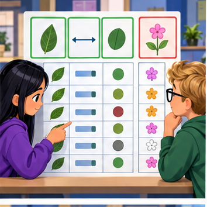
Builder name and experiment date:
Readiness for the connected explanation
Why must held out labels not be used to choose the threshold in Week 1?
This week’s end goal
By the end, I can explain features, labels, targets using a traced example and a stated limitation.
Student lesson · 2 of 14
Notice the evidence
PICTURE ENTRY
Notice → Predict → Explain
Begin with visible evidence; do not explain more than the picture and information support.
Name three visible details without interpreting them.
Predict the data, model, or evaluation decision being made.
Identify one hidden assumption that could change the result.
State what evidence would confirm or reject your prediction.
My prediction and supporting evidence:
A closer explanation
Week 1 separated training examples from testing examples. This week asks a different question: could each input actually be known when a prediction is needed? A historical table may contain facts added after the event. A model trained with those facts can appear successful even though the inputs will be missing when it is used.
Use fictional library loans. At the instant a book is checked out, predict whether it will be returned more than 14 days later. For completed historical loans, label 1 means days_to_return is greater than 14; label 0 means it is at most 14. Exactly 14 days is on time. Assume no changed due dates in this exercise. All records and values are invented; do not collect classmates' borrowing histories.
| Field | When known | Role for this task |
|---|---|---|
| pages | At checkout | Candidate feature |
| queue_at_checkout | At checkout | Candidate feature |
| days_to_return | After return | Creates the label only |
| returned_late | After return | Label to predict |
| loan_id | At checkout | Tracking metadata |
queue_at_checkout is a saved count of waiting requests at that instant. It is not the queue when we later export the table. Candidate means available to consider, not proven useful or appropriate. Exclude the arbitrary loan identifier from this exercise; keep it separately to track records.
Student lesson · 3 of 14
See how it works
ML MECHANISM
Input → Model → Evidence
Trace the information, fitted behavior, and evaluation proof separately.
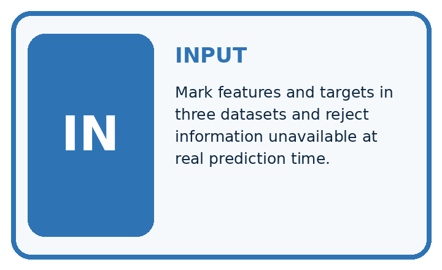
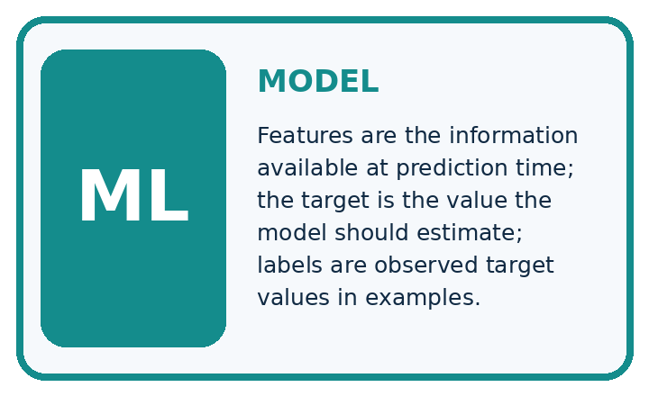
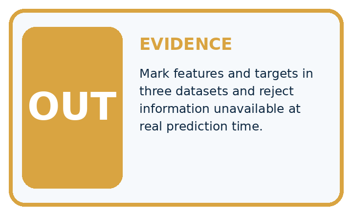
QUESTION Mark features and targets in three datasets and reject information unavailable at real prediction time.
MODEL IDEA Features are the information available at prediction time; the target is the value the model should estimate; labels are observed target values in examples.
PROOF NEEDED Use an unseen case, visible calculation, error analysis, and a stated limitation.
Draw a fresh data → model → prediction → evaluation trace:
A closer explanation
def features(row):
return [row["pages"], row["queue_at_checkout"]]
past = {"loan_id": "A", "pages": 120,
"queue_at_checkout": 2, "days_to_return": 18,
"returned_late": 1}
print(features(past))
print(past["returned_late"])
new = {"loan_id": "B", "pages": 80,
"queue_at_checkout": 0}
print(features(new))The feature order is always pages first, queue count second. The first output is [120, 2]; the separate label is 1 because this historical loan took 18 days. The new loan produces [80, 0] even though its return outcome does not yet exist. The same feature function serves past and new records. It deliberately selects allowed fields rather than copying every column except returned_late.
Follow information through time
This code prepares inputs; it does not fit a model or predict lateness. It assumes the two feature fields contain valid nonnegative integer values and pages is positive. A missing required field raises KeyError. A real pipeline needs explicit validation and a missing-data policy.
Connect the picture and the explanation
Point to the input, the deciding step and the result in this week’s visual. Explain the same step in ordinary words. A picture helps when you can say what each part represents.
Student lesson · 4 of 14
Compare the cases
EVALUATION DESIGN
Four Tests, Four Kinds of Evidence
A system is not understood until it survives more than one comfortable example.


NORMAL Expected data and expected behavior.
BOUNDARY Value close to a threshold, ambiguous label, or uncertain prediction.
MISSING Necessary field, label, source, or measurement is unavailable.
SHIFTED New lighting, species, device, subgroup, or time condition.
Which case most threatens today's claim, and why?
Change one thing in the pictured case
Change: A table adds tomorrow_soil_moisture as an input.
Prediction: Reject it for this prediction-time contract.
Reason: Tomorrow’s measurement is unavailable when today’s prediction must be issued.
Student lesson · 5 of 14
Words that unlock the idea
VOCABULARY
Words You Can Calculate and Defend
A definition matters when it lets you interpret a new dataset, model, or result.
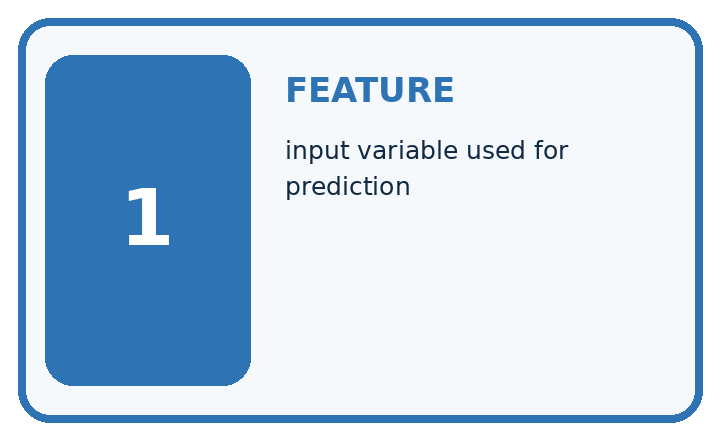
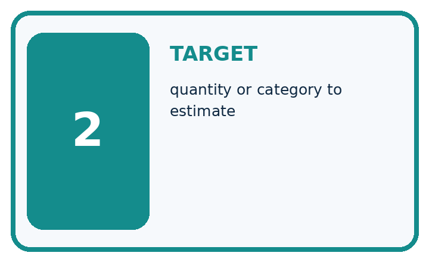
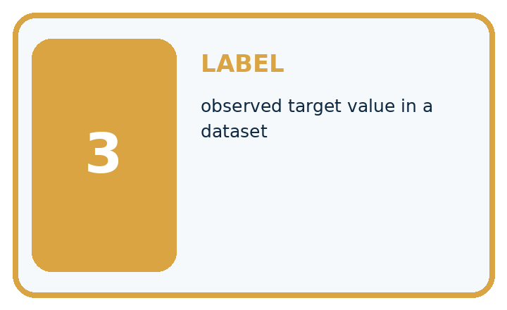
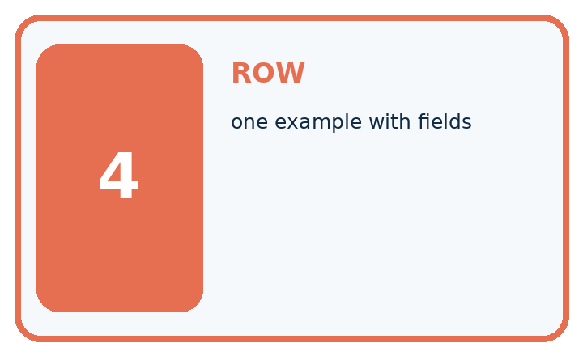
| Term | Precise meaning | My ML example |
|---|---|---|
| feature | input variable used for prediction | |
| target | quantity or category to estimate | |
| label | observed target value in a dataset | |
| row | one example with fields |
Repair the claim using a definition, calculation, or test record:
Words used in the closer explanation
| Word | Meaning |
|---|---|
| Feature contract | A specification of input meaning units order and timing |
| Target | The outcome a prediction aims to estimate |
| Prediction time | The moment when the prediction must be made |
| Target leakage | Predictor information that reveals the outcome but is unavailable at prediction time |
Student lesson · 6 of 14
Follow a worked example
WORKED EVIDENCE
Reason Step by Step
Predict first. Then check each step. A correct answer without visible evidence cannot be audited.
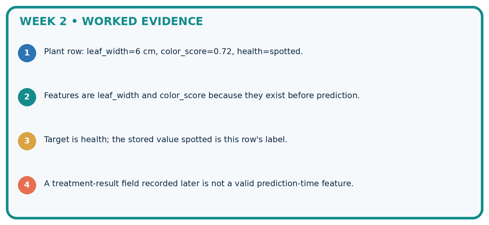
STEP 1 Plant row: leaf_width=6 cm, color_score=0.72, health=spotted.
STEP 2 Features are leaf_width and color_score because they exist before prediction.
STEP 3 Target is health; the stored value spotted is this row's label.
STEP 4 A treatment-result field recorded later is not a valid prediction-time feature.
Recalculate, retrace, or restate the evidence independently:
A closer explanation
For every proposed input, ask what it means, when it was recorded, and whether the same definition can be supplied at checkout. A field in the historical export is not automatically available at prediction time. An input calculated from later information is also unavailable, even if its name does not mention the outcome.
Learn from the worked case
Cover the result before checking it. Say what is given, choose the procedure, and follow one step at a time. Then uncover the result and explain your first mismatch. Ask why a step is allowed, not only what number it produces.
A pictorial worked case: Features, Labels, Targets
Choose features that exist when a plant prediction must be made.
The facts we will use
Predict next-week wilting at today’s photo capture. Available fields: today_light, today_soil_moisture, plant_id; next_week_wilt is the target recorded later.
All inputs and outcomes in this worked example are invented classroom data; no real model run is claimed.
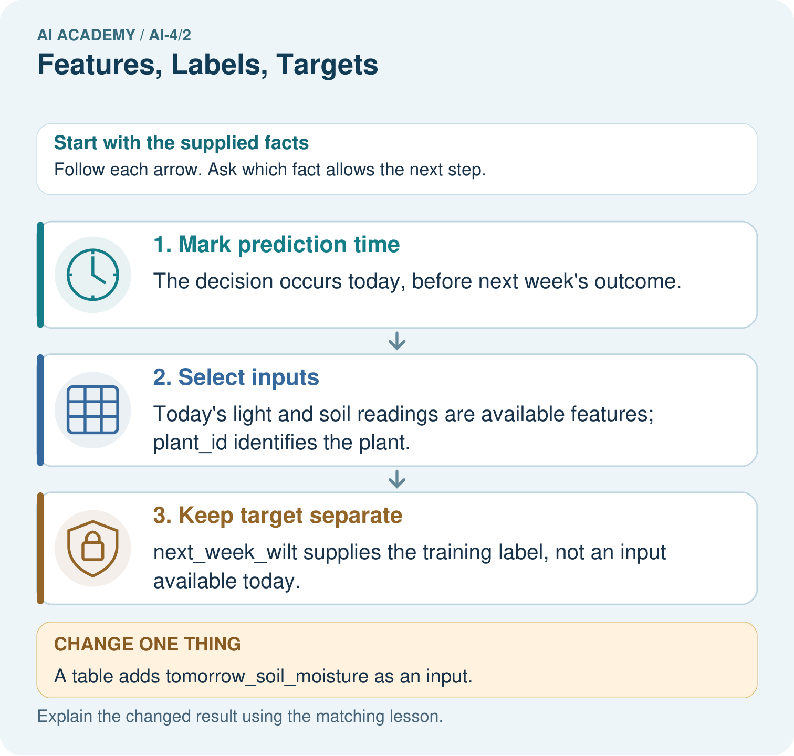
Read the picture one step at a time
Why this result follows
Read the picture in order. next_week_wilt supplies the training label, not an input available today. The arrows show which recorded input or intermediate result each decision uses. Explain the deciding step aloud before checking the changed case; pointing to the final answer alone does not show how it follows.
What this example does not establish
Eligible fields are not automatically useful or causal. Measure their predictive value with a valid split.
Student lesson · 7 of 14
Find and repair a mistake
ERROR DETECTIVE
Compare → Diagnose → Repair
Do not patch the answer. Find the earliest unsupported assumption, data problem, or experiment error.
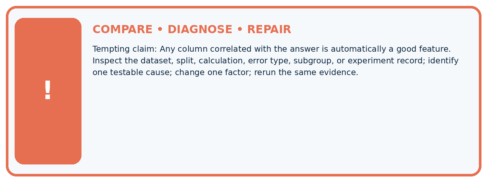
| Evidence record | Expected | Actual | Likely cause / next test |
|---|---|---|---|
| normal case | passes | ||
| boundary case | defined behavior | ||
| missing case | safe fallback | ||
| shifted case | measured limit |
Diagnose one cause and name the cleanest next experiment:
A closer explanation
A feature contract records field names, meaning, units, order and availability time. Here the inputs are pages in pages, then queue_at_checkout in requests, both captured at checkout. The target definition is returned more than 14 days later. Historical outcomes may be available for training, while new outcomes are unknown. Never fill an unknown label with 0 merely because the book has not yet been returned.
Availability alone does not establish predictive value, fairness, a causal effect or a reason to use a model. This lesson audits inputs; later lessons evaluate models. If an input cannot be collected at checkout, revise the design or specify a justified missing-input policy before use.
Student lesson · 8 of 14
Practise together
ML STUDIO
Specify Before You Run
A trustworthy result can be reproduced from the recorded data, code, settings, and evaluation rule.

Experiment record
QUESTION + intended use + success threshold
DATA version + grouped split + leakage check
CODE/preprocessing + features + model + settings + seed
METRICS + positive class + units + denominators
PREDICTIONS + errors + subgroup slices + limitations
HUMAN reviewer + release, revise, limit, or stop decision
Write the minimum record needed to reproduce today's result:
A closer explanation
A learner removes returned_late but keeps days_to_return in the inputs. That still reveals the answer: compare days_to_return with 14. Remove both the target and the later return measurement from prediction inputs. Also exclude a fee calculated after return or a renewal made after checkout. These are examples of target leakage, where unavailable outcome information enters the predictors.
Moving rows into a test set does not repair this problem if each test row still contains the later return measurement. Rebuild the inputs to match checkout time and repeat development and evaluation honestly. If earlier test results influenced changes, obtain a new final evaluation set as well.
Practise with less help: Trace the feature contract
Use workbook W2 for the connected example “Features labels and prediction time”. First fill the input and rule boxes. Try the middle steps before asking for a hint. After a hint, try the next step yourself.
| Plan | Do | Check |
|---|---|---|
| What is given? Which rule or procedure applies? | Record each intermediate step. | Does the result follow? What remains unknown? |
Explain your trace to a partner. Your partner points to one step to check. Swap roles on the next case. Each person writes their own explanation.
Check your reasoning
Use the worked case for Features labels and prediction time. Proposed explanation: “Every stored column is a feature”. Decide whether this explanation is supported. Point to the step or supplied fact that decides; explain your repair if needed.
Answer on your own before discussion. If you are unsure, say which step you need help with.
Explain the picture
Why can a historical table contain a field that is an invalid input? Point to the relevant step in the picture, then write the changed result and the rule or evidence that supports it.
This is supported practice. Keep the separately named independent case for an attempt before feedback.
Student lesson · 9 of 14
Run the investigation
EVIDENCE LAB
Predict → Run → Calculate → Interpret
Keep the test conditions fixed, record every result, and change only one planned factor.
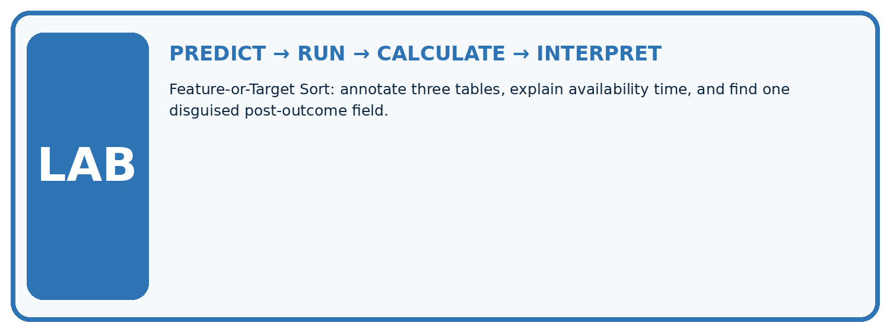
1. Write the hypothesis and expected evidence before running.
2. Feature-or-Target Sort: annotate three tables, explain availability time, and find one disguised post-outcome field.
3. Run one normal, one boundary, one missing, and one shifted case.
4. Calculate the metric from raw counts or row-level errors.
5. Interpret what changed, what did not, and what remains unsafe or unknown.
| Case | Prediction | Actual | Calculation / evidence | Meaning / next test |
|---|---|---|---|---|
| Normal | ||||
| Boundary | ||||
| Missing | ||||
| Shifted |
Plan → try → check
Before trying: what do I expect, and why? While trying: which step could first go wrong? Afterwards: what did I actually observe, and what should change? Keep “not run” if you only traced the procedure.
Student lesson · 10 of 14
Build your understanding
MASTERY
From Knowing the Word to Owning the Idea
Move upward only when you can produce evidence without copying the example.

DEFINE Use all four terms precisely: feature, target, label, row.
CALCULATE Reproduce the worked evidence with units and denominator.
TRACE Explain the data, code or decision path.
DIAGNOSE Any column correlated with the answer is automatically a good feature.
TRANSFER Solve a fresh dataset or model case.
IMPROVE Change one cause and rerun fixed evidence.
DEFEND State intended use, metric, limitation, and human responsibility.
Student lesson · 11 of 14
Connect your project
CUMULATIVE PROJECT
Responsible Plant Classifier
Every week adds one reviewable artifact to the same evidence-based capstone.
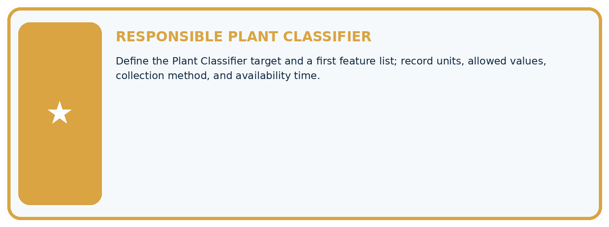
Which requirement or risk does this artifact address?
Which dataset, split, code, and metric version does it use?
What normal and shifted cases were tested?
What remains uncertain or weak?
What decision still belongs to a teacher or qualified human?
My evidence-linked project decision:
Evidence for your project
For your Responsible Plant Classifier, save the input, procedure, observed result and limitation of this check. Label this worked example as practice; use a different, previously unreviewed case when checking independent understanding.
Student lesson · 12 of 14
Show what you know
INDEPENDENT PROOF
Explain • Calculate • Transfer • Defend
Complete this with a fresh case after guided practice and compare it with the mastery criteria.
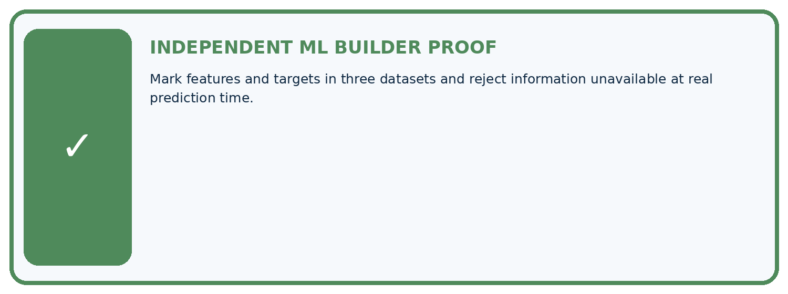
□ Define the task, feature/target roles, and intended-use boundary.
□ Show the calculation, code trace, or experiment record.
□ Test a normal case and one revealing boundary, missing, or shifted case.
□ Diagnose one failure without changing several factors at once.
□ Name a limitation, fairness concern, and the human-review action.
Independent evidence and defense:
My level: □ Not yet □ With one hint □ Independently □ I can teach and defend it
Student lesson · 13 of 14
Study a complete case
Week 2 Worked case
Use the supplied details to practise the weekly concept before attempting the independent question. This case extends the illustrated lesson.
The situation
Rows contain leaf length, edge type and healthy/spotted label.
The question
Identify features, target and prediction-time inputs.
Worked explanation
Length and edge type are candidate features; the label is the target. Do not supply the true target as an input to predicting it. Evaluate feature usefulness.
Explain it in your own words
Which detail supports the answer, and why does it matter?
Trace the supplied case visually
Separate features from the target
| Evidence or stage | Value or result |
|---|---|
| Length | Candidate input feature |
| Edge type | Candidate input feature |
| Healthy or spotted | Target label |
| Prediction time | True target is unavailable |
Rows contain leaf length, edge type and healthy/spotted label.
Identify features, target and prediction-time inputs.
Length and edge type are candidate features; the label is the target. Do not supply the true target as an input to predicting it. Evaluate feature usefulness.
Student lesson · 14 of 14
Try a new case independently
Independent case: Audit a new task independently
A fictional robot predicts at dispatch whether a parcel trip will take more than 10 minutes. Fields are route_steps and queue_at_dispatch captured at dispatch, trip_id for tracking, arrival_minutes measured after arrival, and slow = 1 when arrival_minutes > 10. Specify inputs, order, target and exclusions. For a past trip with steps 30, queue 2, arrival 10, give features and label. For a new trip with steps 24 and queue 0, give features and explain whether slow is known.
Attempt this case before feedback. Record any help. Earlier examples below are further practice; a case already practised with feedback cannot establish fresh transfer.
Week 2 Independent application
Close the worked explanation. Apply the idea to this different question without copying.
A row contains leaf_length_cm=8, leaf_width_cm=3 and species=fern. For predicting species, identify two features and the target.
My answer, with a trace, calculation or supporting evidence
Create and test
Change one relevant detail. Predict the result before testing. Include a boundary or missing-information case when it helps reveal a limit.
My changed input and expected result
Connect to your project
Define the Plant Classifier target and a first feature list; record units, allowed values, collection method, and availability time.
The evidence I will keep
Your teacher has the independent answer and scoring criteria. Complete the matching workbook week to keep your practice evidence together.
Transfer practice from the original programme
A table has leaf length, edge type and verified species. A model predicts species using all three columns. Identify leakage and a legitimate input set.
Use feedback to improve
Attempt the independent case before hints. Record whether you worked alone, used a hint or followed a model. After feedback, fix the first unsupported step and explain why it changed. A later check uses a changed case, not a copied answer.